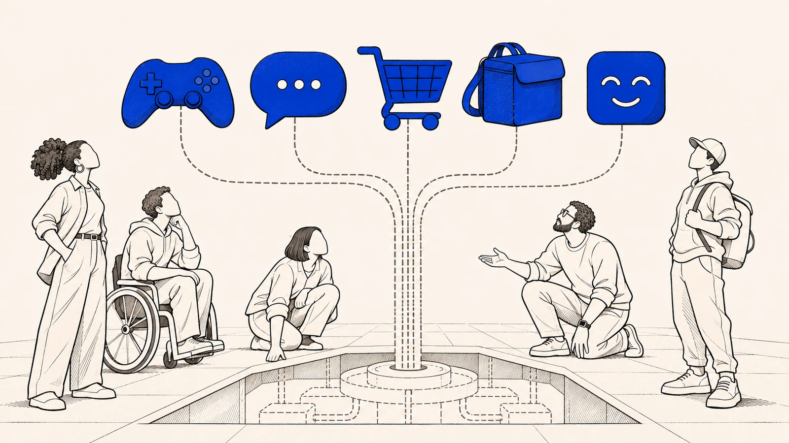

Caminho · Parte 10 de 11
Isso só acontece nos jogos?

De onde vem
O ponto comum não está na superfície do ambiente, mas na forma pela qual a fruição é governada, a expectativa é administrada, a inteligibilidade é modulada e a contestação é tornada mais ou menos praticável por desenho privado.p. 787
Talvez você nem jogue. O mesmo vale para o assistente de inteligência artificial que você usa para estudar ou trabalhar e para a loja virtual onde você compra. Vale para o aplicativo que distribui corridas e entregas e para o atendimento simpático que faz a sua reclamação parecer exagero.
O jogo foi o ponto de partida porque ali tudo aparece mais nítido. A conta, a moeda, as punições e as mudanças estão à vista de qualquer jogador. Fora do jogo, os mesmos efeitos costumam vir embrulhados como coisa inevitável, e por isso ficam mais difíceis de enxergar.
De onde vem
O movimento de consolidação e de passagem ao procedimento de reconstrução dogmática evidencia, com especial clareza, como a indústria do entretenimento interativo, em razão da prestação contínua que a caracteriza, opera como superfície ostensiva de exposição da Lex Plataformaep. 497
A diferença é que, fora do jogo, os mesmos efeitos tendem a ser apresentados como inevitáveis, e não como escolhas de arquiteturap. 23
Esses traços se manifestam, com particular nitidez, em três modelos de negócios digitais: jogos operados como serviço, marketplaces e serviços de inteligência artificial fornecidos por plataforma.p. 486
O recorte por plataformas de jogos eletrônicos atende a razão metodológica, e não a preferência temática. Esses ecossistemas tendem a concentrar, em alta resolução, elementos definidores do regime do OICp. 484
O que une esses casos não é o setor da economia nem o tipo de tecnologia. É o jeito como a plataforma governa o uso, administra o que você espera, controla o que dá para entender e torna a contestação mais fácil ou mais difícil.
Por isso não basta olhar o nome do serviço, se ele se apresenta como aplicativo, loja, rede ou assistente. O que importa é o mecanismo principal pelo qual a sua experiência é organizada, ajustada, refeita e tornada contestável ou não. É esse mecanismo, e não o rótulo do setor, que permite comparar casos tão diferentes à primeira vista.
De onde vem
O ponto comum não está na superfície do ambiente, mas na forma pela qual a fruição é governada, a expectativa é administrada, a inteligibilidade é modulada e a contestação é tornada mais ou menos praticável por desenho privado.p. 787
A unidade do exame não está no ramo econômico nem na etiqueta mercadológica do serviço, mas no mecanismo predominante pelo qual a experiência do usuário é organizada, modulada, reconfigurada ou tornada contestável.p. 755
E quando o assistente que você usa muda de comportamento?
Um assistente de inteligência artificial não entrega só respostas soltas. Ele organiza como você entende um problema, em que você confia e como você decide. Você incorpora o que ele diz ao seu trabalho, revê, corrige e volta a perguntar.
Por isso o problema não se resume a uma resposta errada aqui e ali. O que importa é a confiança que sustenta o uso e a possibilidade de reconstruir o que aconteceu. Se a qualidade do serviço muda, a pergunta é a mesma da skin. O que foi prometido, o que mudou e com que efeito sobre quem dependia dele?
De onde vem
O que se oferece é ambiente de orientação cognitiva.p. 757
Trata-se de infraestrutura funcional que organiza como o usuário compreende o problema submetido, confia na resposta recebida, a incorpora à sua tomada de decisão, a revê, a corrige ou a reavalia diante de erro, oscilação ou mudança de desempenho.p. 757
A primeira é tratar o conflito como mera discussão sobre erro factual isoladop. 757
a possibilidade institucional de reconstruir o nexo entre promessa, entrega, alteração e impactop. 757
Quem decide o que você vê numa loja virtual ou numa rede social?
Uma loja virtual costuma dizer que só aproxima quem compra de quem vende, como uma praça neutra. Na prática, ela escolhe o que aparece primeiro, o que fica escondido, quem parece confiável, o que é comparável e o que demora a chegar.
Ou seja, você não enxerga o mercado. Enxerga o mercado pelos filtros da plataforma. Rankings, reputação, destaque e recomendação não são detalhes da vitrine, porque fazem parte do que ela entrega e pesam na sua expectativa, no risco que você percebe e na sua escolha.
De onde vem
Plataformas dessa natureza não apenas conectam. Elas selecionam, hierarquizam, destacam, ocultam, aproximam, retardam, priorizam e reorganizam a forma pela qual a realidade do ambiente se torna perceptível ao usuário.p. 761
Em sua linguagem formal, elas frequentemente aparecem como espaços neutros de encontro entre vendedor e compradorp. 761
Rankings, reputação, destaque, recomendação, priorização e modulação de alcance não são elementos periféricos. Integram a utilidade funcional do ecossistema e influenciam diretamente a formação da expectativa, a avaliação do risco e a possibilidade de escolha racional.p. 761
Quem manda no trabalho feito por aplicativo?
Aplicativos de entrega e de transporte chamam motoristas e entregadores de parceiros independentes. Mas quem distribui as chamadas, dá a nota, decide quem tem prioridade, define as regras para aceitar corridas e aplica as punições é o aplicativo.
Para quem trabalha assim, o aplicativo fornece mais do que um pagamento por tarefa. Fornece o próprio ambiente em que o trabalho se torna possível, e esse ambiente é governado por ele. Por isso não basta olhar o que diz o contrato sobre autonomia. É preciso olhar quem organiza, de fato, o acesso à demanda e a permanência no fluxo.
De onde vem
A plataforma organiza acesso à demanda, distribuição de chamadas, previsibilidade mínima de remuneração, permanência no fluxo produtivo, critérios reputacionais, padrões de priorização, regras de aceitação e mecanismos de sanção.p. 765
O que se fornece, em termos funcionais, é uma infraestrutura privada de possibilidade econômica.p. 765
Os instrumentos mobilizados por iFood, 99Food, Uber e 99 insistem, com variações de linguagem, em caracterizar os parceiros como independentesp. 765
Esse ponto é importante porque impede que a análise seja capturada por narrativas excessivamente formais sobre autonomia contratual.p. 765
Por que reclamar parece exagero?
E tem o tom. Uma tela simpática, respostas gentis, um jeito de cuidar e uma linguagem próxima, quase de amigo, podem fazer a perda parecer aceitável e a queixa parecer exagero, antes mesmo de qualquer briga começar.
Em muitos casos o conflito é administrado antes de existir. A plataforma não cuida só da sua adesão inicial. Cuida também de quanto dano você tolera e de quanta energia você tem para reagir. A frustração vai sendo absorvida como parte do normal, e a reclamação nunca chega a ser feita.
De onde vem
Em muitos casos, ele é governado antes disso.p. 780
A interface cordial, o tom assistivo, a promessa difusa de cuidado, a transparência apenas performática, a aparência de horizontalidade comunicacional e a personalização calculada da linguagem compõem materialmente o ambiente de fruição.p. 781
Funcionam como técnica de governo da percepção, organizando o limiar a partir do qual a perda será percebida como aceitável, o abuso será lido como falha menor e a contestação será percebida como desnecessária, prematura ou desproporcional.p. 781
A plataforma, nesse contexto, não administra apenas adesão inicial. Administra a tolerância ao dano e a energia de reação do usuário.p. 781
Toda plataforma tem o mesmo problema?
Mostrar o mecanismo não é condenar o serviço. Nem toda plataforma reproduz o problema, e as que reproduzem não o fazem com a mesma força. Também não é toda relação mediada por tecnologia que entra na proteção do consumidor.
A pergunta é sempre a mesma, em qualquer lugar. Dá para saber o que foi prometido e o que mudou? E dá para reagir?
De onde vem
O ponto, aqui, não é reunir exemplos digitais sob uma mesma rubrica por mera afinidade tecnológica, nem sugerir que toda plataforma contemporânea reproduz, com idêntica intensidade, a mesma forma de vulnerabilidade, opacidade ou captura da fruiçãop. 755
Nem toda relação economicamente mediada por tecnologia justificará incidência do CDC.p. 780
Não se afirma, com isso, que toda mediação digital converta automaticamente qualquer bem em OIC.p. 487
O que você pode exigir?
Então por que insistir tanto em dar nomes?